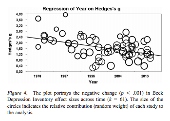

2015년 7월 16일
Please provide the paragraph you would like me to translate.
인지행동치료(cognitive-behavioral therapy) 서적인 패닉이 공격할 때(When Panic Attacks)에서 발췌한 짧은 사례를 소개한다. 분량을 위해 대폭 편집했다.
네이트(Nate)라는 이름의 만성 불안증을 앓는 의대 교수는 낮은 자존감과 무능함이라는 기분에 시달리고 있었다. 어느 날, 네이트는 자신의 이력서를 내게 가져왔다. 나는 경악했다. 거기에는 60페이지가 넘는 연구 논문 목록과 권위 있는 수상 경력, 그리고 전 세계 주요 컨퍼런스에서 행한 기조연설 기록들이 적혀 있었다. 나는 네이트에게 그 모든 성취와 낮은 자존감을 어떻게 조화시키고 있느냐고 물었다. 그는 이력서를 볼 때마다 낙담하며, 동료들의 연구가 자신의 것보다 훨씬 더 엄격하고 중요하다고 스스로에게 말한다고 답했다. 그는 자신의 논문이 실제 조직을 다루는 하드코어한 실험실 연구라기보다 주로 이론적인 작업으로 이루어져 있어 "부실해" 보인다고 말했다. 그는 "번스(Burns) 박사님, 제가 아무리 많은 것을 성취해도 결코 충분해 보이지 않습니다"라고 말했다.
완벽주의는 분명 네이트의 자기 파괴적인 신념 중 하나였다. 나는 네이트에게 '쾌락/완벽 균형 워크시트(Pleasure/Perfection Balance Worksheet)'를 사용해 이 신념을 검증해 볼 것을 제안했다. 나는 그에게 시트 상단에 "완벽하게 해낼 수 없다면, 그것은 전혀 할 가치가 없다"라고 적게 한 뒤, 왼쪽 열에 몇 가지 활동을 나열해 달라고 요청했다. 그리고 각 활동이 얼마나 만족스럽고 보람찰지 예측해 기록하고, 실제로 마친 후에는 얼마나 만족스럽고 보람찼는지, 그리고 각 활동을 얼마나 완벽하게 수행했는지를 평가하게 했다. 그렇게 함으로써, 자신이 완벽하게 해낸 일들만 즐겼다는 것이 정말 사실인지 알아낼 수 있게 하려는 의도였다.
다음 주, 네이트는 흥미로운 결과들을 가지고 왔다. 그가 적은 활동 중 하나는 신입 의대생들을 위한 환영 강연이었다. 네이트는 의대에서 가장 카리스마 있는 연설자로 꼽혔기에 매년 이 강연을 맡았다. 네이트는 이 강연의 만족도를 70%로 예측했지만, 실제 만족도는 20%에 불과했다. 그는 30초 동안 기립박수를 받았고, 강연의 완벽도 또한 90%로 평가했기에 이는 놀라운 결과였다.
나는 네이트에게 왜 만족도 점수가 그렇게 낮은지 물었다. 그는 항상 기립박수를 받았기에 습관적으로 그 시간을 쟀다고 설명했다. 작년에는 학생들이 강연이 끝난 후 1분 넘게 서서 환호했다. 그런데 올해는 겨우 30초 동안만 서서 환호했다는 것이다. 네이트는 실망감을 느꼈고, 자신이 이제 한물갔을지도 모른다는 걱정을 하기 시작했다.
네이트의 쾌락/완벽 균형 워크시트에 적힌 두 번째 항목은 [욕실의 고장 난 파이프를 수리한 것]이었다. 도구와 부품을 사고 수리 방법을 조언받기 위해 철물점을 여러 번 오가야 했기에, 밤 10시가 되어서야 겨우 수리를 마칠 수 있었다. 그는 어떤 배관공이라면 5분 만에 고쳤을 일이라며 완벽도를 5%로 평가했다. 하지만 이 활동에 대한 만족도는 100%였다. 사실 그는 짜릿함까지 느꼈다. 네이트는 이것이 지난 몇 년간 자신이 한 일 중 가장 만족스러운 일이었다고 말했다.
네이트의 실험 결과는 완벽하게 해내지 못하면 할 가치가 없다는 그의 신념과 일치하지 않았다. 그는 자신이 간과해 온 삶의 수많은 만족감의 원천들이 있다는 것을 깨달았다. 예를 들어, 부부가 모두 세계적인 등산가는 아닐지라도 아내와 함께 숲속을 산책하는 것, 챔피언은 아닐지라도 아들과 스쿼시를 치는 것, 혹은 따뜻한 여름 저녁에 가족과 함께 아이스크림을 먹으러 나가는 것 같은 일들 말이다.
이 실험은 네이트의 자존감과 커리어에 상당한 영향을 미쳤다. 그는 불안감과 열등감이 줄어들었으며, 모든 일을 완벽하게 해야 한다는 강박에서 벗어나자 오히려 생산성이 향상되었다고 내게 말했다.
처음에는 이 이야기가 지어낸 것이라고 생각했다. 하지만 책에서는 이 사례들이 실제 환자들을 바탕으로 했다고 주장하며, 저자가 수업 시간에 이 치료 세션들의 일부 영상을 학생들에게 보여주기까지 했다고 언급한다. 흥미롭다. 다른 사례는 또 없을까?
몇 년 전, 나는 플로리다의 소규모 심리치료사 그룹을 대상으로 3일간의 집중 워크숍을 진행했다. 월터(Walter)라는 이름의 결혼 및 가족 치료사는 8년 동안 함께 살았던 파트너 폴(Paul)이 새로운 연인을 찾아 떠나는 바람에 몇 달째 불안과 우울증으로 고통받고 있다고 설명했다. 그는 가슴에 손을 얹으며 말했다. “바로 여기가 정말 무겁게 느껴져요. 이 모든 경험 속에서 그저 외로움과 공허함만이 느껴집니다. 너무나 보편적이고 결정적인 느낌이에요. 이 고통이 세상 끝날 때까지 영원히 계속될 것만 같습니다.”
나는 월터에게 폴과의 이별에 대해 어떻게 생각하고 느끼는지 물었다. 그는 스스로에게 뭐라고 말하고 있었을까? 그는 이렇게 답했다. “엄청난 죄책감과 수치심을 느껴요. 분명 제 잘못이었을 겁니다. 제가 충분히 능숙하지 못했거나, 매력적이지 않았거나, 혹은 역동적이지 못했겠죠. 정서적으로 그 사람 곁에 있어 주지 못했을지도 모릅니다. 제가 다 망쳐버린 것 같아요. 가끔은 제가 완전히 사기꾼처럼 느껴집니다. 결혼 및 가족 치료사라는 사람이 정작 자신의 관계조차 유지하지 못했다니요. 저는 패배자입니다. 정말, 정말 한심한 패배자예요.”
월터는 자신의 일일 기분 기록지에 다음과 같은 다섯 가지 부정적인 생각들을 적어 넣었다.
그는 이 모든 생각들을 매우 강하게 믿고 있었다.
월터가 겪는 고통의 대부분은 거절에 대해 생각하는 그의 비논리적인 방식에서 비롯된다는 것을 알 수 있다. 월터가 폴보다 스스로를 훨씬 더 가혹하게 다루고 있다고 말해도 좋을 정도다. 월터는 따뜻하고 자애로운 사람으로 보였기에, 나는 '이중 잣대 기법(Double Standard Technique)'이 도움이 될 것이라 생각했다. 나는 그에게 8년 동안 함께 산 사람에게 거절당한 소중한 친구가 있다면 뭐라고 말해줄 것인지 물었다. 나는 이렇게 덧붙였다. “그 친구에게 뭔가 문제가 있다거나, 인생을 망쳐서 영영 변기통에 처박아 버렸다고 말하시겠어요?”
월터는 충격을 받은 표정으로 친구에게는 절대로 그런 말을 하지 않을 것이라고 답했다. 나는 그가 같은 곤경에 처한 친구에게 뭐라고 말할지 직접 해볼 수 있도록 역할극 연습을 제안했다. […]
치료사 (환자의 친구 역할): 월터, 아직 말하지 않은 다른 관점이 있어. 네가 이해 못 하는 게 있는데, 난 함께 살 수도 없고 관계를 맺을 수도 없는 인간이야. 그게 내가 이렇게 괴로운 진짜 이유고, 그래서 난 남은 평생을 혼자 보내게 될 거야.
환자 (방금 나쁜 이별을 겪은 친구 역할의 치료사에게): 세상에, 그런 말을 하니 정말 놀랍네. 난 널 오랫동안 알아왔지만 한 번도 그렇게 느낀 적이 없거든. 사실 넌 언제나 따뜻하고 개방적이었고, 충실한 친구였어. 도대체 어떻게 해서 네가 관계를 맺기 불가능한 사람이라는 결론에 이르게 된 거야?
치료사 (역할극 계속): 글쎄, [내 남자친구]와의 관계가 깨졌잖아. 그게 내가 관계를 맺기에 불가능한 사람이라는 증거 아니겠어?
환자 (역할극 계속): 솔직히 말해서, 네 말은 별로 앞뒤가 맞지 않아. 우선, 그 관계에는 네 남자친구도 함께였잖아. 춤을 추려면 두 사람이 필요하듯 관계도 마찬가지지. 그리고 둘째로, 넌 그와 8년 동안 꽤 성공적인 관계를 유지했어. 그런데 어떻게 네가 함께 살기 불가능한 사람이라고 주장할 수 있겠어?
치료사 (역할극 계속): 내가 제대로 이해했는지 확인해볼게. 내가 8년 동안 꽤 성공적인 관계를 유지했으니, 내가 함께 살기 불가능하거나 관계를 맺기 불가능한 사람이라고 말하는 건 별로 말이 안 된다는 거지?
환자 (역할극 계속): 바로 그거야. 아주 정확해.
그 순간, 월터의 뇌 속에 갑자기 전구가 켜진 것처럼 그의 얼굴이 환해졌고, 우리 둘은 웃음을 터뜨렸다. 그의 부정적인 생각들이 갑자기 터무니없게 느껴졌고, 기분에도 즉각적인 변화가 나타났다. 월터가 자신의 부정적인 생각들이 거짓임을 깨달은 후, 나는 다시 기분 점수를 매겨달라고 요청했다. 슬픔의 정도는 80%에서 20%까지 뚝 떨어졌다. 죄책감, 수치심, 불안감은 10%까지 떨어졌고, 절망감은 5%로 급감했다. 외로움, 당혹감, 좌절감, 그리고 분노는 완전히 사라졌다.
책의 분량은 꽤 길며, 이런 식의 이야기들로 가득 차 있다. 세계 최고의 인지 행동 정신과 의사 중 한 명인 저자는 자신이 겪은 치료 경험을 다음과 같이 묘사한다.
[내가 처음 이 치료법에 대해 알았을 때, 나는] 우울증과 불안증이 이렇게 단순한 접근법으로 다루기에는 너무나 심각하고 중한 질환이라고 생각했다. 하지만 다루기 까다로운 환자 몇몇에게 이 방법들을 시도해 보았을 때, 내 인식은 바뀌었다. 절망감과 무가치함, 그리고 필사적인 고통을 느끼던 환자들이 회복되기 시작한 것이다. 처음에는 이러한 기법들이 실제로 효과가 있다는 사실이 믿기 어려웠으나, 환자들이 자신의 부정적인 생각들이 거짓임을 깨닫게 되었을 때 상태가 호전된다는 사실만은 부정할 수 없었다. 때로는 상담 세션 도중 내 눈앞에서 즉각적으로 회복되는 경우도 있었다. 수년 동안 사기가 꺾인 채 절망 속에 살던 환자들이 갑자기 문제의 전환점을 맞이했다. 50년 넘게 지독한 우울증을 앓으며 세 차례나 자살 시도를 했으나 간신히 살아남았던 한 프랑스 노년 여성이, 어느 날 내 진료실에서 "조아 드 비브르(Joie de vivre)! 조아 드 비브르(삶의 기쁨)!"라고 외치던 모습이 여전히 기억에 생생하다. 이러한 경험들은 내게 매우 강렬한 영향을 주었고, 나는 나의 천직이 뇌 연구보다는 임상 작업에 있다고 결심했다. 깊은 고뇌 끝에 나는 연구원으로서의 경력을 포기하고 전업 임상가가 되기로 했다. 지난 수년간 나는 우울증과 불안증 환자들과 35,000회 이상의 심리 치료 세션을 가졌으며, 인지행동치료(CBT)에 대해 느끼는 열정은 처음 배우기 시작했을 때와 조금도 다름이 없다.
좋다. 나는 세계 최고의 인지행동치료사(cognitive-behavioral therapists) 중 한 명은 아니다. 정식 인지행동치료를 공부한 지는 이제 겨우 일주일 정도 되었고, 입원 환자들을 대상으로 훈련받지 않은 임시방편식 치료를 해온 기간은 몇 년 정도 된다. 하지만 나는 다른 사람들이 치료를 진행하는 모습을 많이 관찰했고, 치료를 받아본 사람들과 이야기를 나누었으며, 치료를 동시에 받고 있는 환자들을 진료하기도 했다. 그리고 그 과정에서 내가 받은 인상은 매우 달랐다.
번즈(Dr. Burns) 박사는 환자들에게 자신의 불안과 부정적인 생각들이 과연 합리적인지 자문해 보라고 요청한다. 그러면 환자들의 얼굴에는 생기가 돌고, 그들이 겪던 모든 정신과적 문제들이 갑자기 눈 녹듯 사라진다.
내가 만난 치료사들은 환자들에게 그들의 불안과 부정적인 생각들이 과연 합리적인지 자문해 보라고 아주 조심스럽게 권한다. 그러면 환자들은 이렇게 답한다. “뻔한 소릴 하고 있네. 당연히 합리적이지 않지. 하지만 그걸 안다고 해서 도움이 되거나 생각이 사라지는 건 아니라고. 이미 서른 명쯤 되는 사람들한테 똑같은 소리를 들었어. 이제 입 닥치고 자낙스(Xanax)나 줘.”
지난 포스트에서 어떤 분이 인지행동치료(cognitive-behavioral therapy)가 가식적이고 가르치려 드는 느낌이 든다면 어떻게 해야 하느냐고 물었다. 나는 반쯤 농담조로 "가식적이고 가르치려 드는 것을 싫어하신다면, CBT는 당신과 맞지 않을 수도 있습니다"라고 답했다. 심술궂고 비관적인 답변이라는 건 알지만, 내가 이야기를 나눠본 모든 이들이 거의 동일한 경험을 했다. 예전에는 내 친구들이 꽤 똑똑해서 그랬거나, 혹은 CBT가 지능이 낮은 사람들을 대상으로 설계되었기 때문이라고 생각했다. 하지만 '천재 의대 교수' 네이트(Nate)는 꽤 똑똑해 보인다. '치료사' 월터(Walter) 역시 마찬가지다. 번즈(Burns)의 책에는 유능한 변호사나 대학원생 등 다양한 사례들이 등장한다. 그들 모두는 "글쎄요, 당신의 비합리적인 부정적 생각들이 사실은 합리적이지 않을 수도 있다는 점을 고려해 보셨나요?"라는 그의 제안이 인생을 송두리째 바꿔놓았다고 말한다.

이 그래프의 출처가 된 연구, 우울증 치료제로서의 인지행동치료 효과의 하락: 메타 분석(The Effects of Cognitive-Behavioral Therapy As An Anti-Depressive Treatment Is Falling: A Meta-Analysis)를 읽어보셨을지도 모르겠다. 보시다시피, 헤지스 g(Hedges’ g) 값은 1980년 약 2.5에서 오늘날 약 1까지 하락했다. 최근의 당혹스러운 결과들에 따르면, 이제 인지행동치료(CBT)는 과거의 숙적이었던 정신분석과 비교해 전혀 나을 것이 없다고 한다. 대체 왜 그럴까?
가능한 설명은 많다. 보통은 "원래 효과가 그리 좋지 않았는데, 이제야 편향성이 심하지 않은 연구들이 이루어지고 있는 것뿐이다"라는 쪽에 무게가 실리지만, 분석 결과 연구의 질적 차이는 뚜렷하게 나타나지 않았다. 치료사들의 헌신도가 시간이 흐르며 낮아졌다거나, 환자군의 특성이 변했다는 의견도 있다. 모두 합리적으로 들리는 이야기들이다. 하지만 한 가지 가능성을 더 언급해보고자 한다.
정신과 의사들은 가끔 우울증 환자가 너무 많아서 차라리 수돗물에 프로작(Prozac)을 타는 게 낫겠다고 농담하곤 한다. 리튬(lithium)에 대해서도 가끔 같은 말을 하지만, 그 경우에는 농담이 아니다.
수돗물에 인지행동치료(cognitive-behavioral therapy)를 타서 공급하자는 말을 한 사람은 아무도 없었지만, 그 말이 조금이라도 의미가 있다면 우리는 이미 어느 정도 그렇게 해왔다고 말하고 싶다. 완벽주의, 과도한 자책, 조건부 대 무조건적 자존감, 심호흡, 목표 설정 같은 인지행동적 아이디어들은 이미 대중문화의 기본적인 요소가 되었다. 자존감 운동(self-esteem movement) 전체가 정확히 인지행동적인 것은 아니지만, 분명히 그 궤를 같이하며, 자아와 심리학을 바라보는 사고방식을 인지행동적 아이디어가 훨씬 더 잘 자랄 수 있는 토양으로 변화시킨 것은 분명하다. 영화 <인사이드 아웃(Inside Out)>은 거의 "인지행동치료: 더 무비"라고 해도 무방할 정도였다.
내가 읽고 있는 책은 2006년에 나온 것이지만, 번즈(Burns) 본인은 애런 벡(Aaron Beck)의 초기 제자 중 한 명이자 최초의 인지 행동 치료사 중 한 명이었다. 자신의 불안이 어쩌면 비합리적일지도 모른다는 사실을 깨닫고 완전히 충격을 받은 듯한 이 환자들 중 얼마나 많은 이들이 그 아주 초기 시절부터 치료를 받아왔는지 궁금해진다.
심리학에 관한 사람들의 기본적인 믿음이 어떻게 변해가는지 추적하기란 매우 어려운 일이다. 나는 벤자민 스포크(Benjamin Spock) 박사가 1940년대에 낸 획기적인 육아 서적이 나오기 전까지, 부모들이 아기에게 포옹이나 키스를 하거나 애정을 표현해서는 안 된다는 교육을 받았다는 사실을 알고 경악했다. 그렇게 하면 아이를 과잉보호하게 되어 나약하고 응석받이인 성인으로 자랄 것이라는 이유에서였다. 그 이전의 부모들은 자녀와 훨씬 덜 교류했으며, 형제자매나 유모, 친구들이 아이를 키우거나 혹은 아이가 스스로 자랄 것이라고 생각했다. 고대 그리스에 관한 책들을 읽으면서도, 그들이 자아나 개인의 역할에 대해 우리와 완전히 다른 관점을 가지고 있다는 사실을 눈치채지 못하고 지나치기 쉽다. 따라서 우리가 "당연하다"고 생각하는 심리학적 상식의 상당 부분이, 지난 30년 동안 인지행동치료(CBT)가 상수도망을 통해 서서히 스며든 결과라고 해도 나는 놀라지 않을 것이다.
만약 그것이 사실이라면, 왜 인지행동치료(CBT)가 더 이상 예전만큼 효과적이지 않은지 설명이 된다. 그저 사람들이 이미 알고 있는 사실을 말해주고 있을 뿐이기 때문이다.
여기서 타당한 의문이 생길 수 있다. 그렇다면 왜 모든 사람이 이미 더 나아진 상태가 아닌가? 우울증은 계속 증가하는 추세인 것으로 보이며, 그 정확한 정도에 대해서는 논란이 많지만, 이는 모든 사람이 자동으로 기초적인 수준의 치료를 받고 있을 때 나타날 현상과는 거리가 멀어 보인다.
여기 한 가지 가설이 더 있다. 다만 앞선 가설보다 훨씬 더 근거가 빈약하다. 해당 메타 분석은 인지행동치료(CBT)가 더 이상 '흥미로운 최신 기법'으로 여겨지지 않게 되면서, 시간이 흐름에 따라 플라세보 효과의 일부를 상실했을 가능성을 제기한다. 나는 이 주장에 동의하기 어렵다. 정신약물에 대한 나의 분석에 따르면, 환자들은 웬일인지 오래된 약물을 훨씬 더 선호하는 경향이 있기 때문이다. 하지만 심리치료의 상당 부분이 플라세보 효과에 기반하고 있다는 점을 고려하면, 그들의 주장이 어느 정도 일리가 있을지도 모른다.
심리치료의 어느 부분이 플라세보 효과를 제공하는 것일까? 클리닉에 방문하는 것일까? 치료사와 대화를 나누는 것일까? "자기 평가(self-estimation)" 같은 그럴싸한 단어들을 듣는 것일까? 아니면 워크시트를 작성하는 것일까?
많은 치료법이 공통적으로 가진 특징 중 하나는 '통찰을 얻었다'는 기분을 제공한다는 점이다. 예를 들어, 정신분석가들은 현재 당신이 겪는 문제들이 어린 시절의 경험과 어떻게 연결되어 있는지에 대해, 놀라우면서도 그럴듯한 설명을 내놓는 데 매우 능숙하다. 그 결과 환자는 보통 다음과 같이 깨달음을 얻은 기분을 느끼게 된다. "맞아요, 저를 괴롭히던 이 다리 통증이 정말로 제가 일곱 살 때 실수로 어머니의 가슴에 스쳤던 바로 그 부위네요. 정말 흥미롭군요."
옛날에는 인지행동치료(CBT)가 1분에 한 번꼴로 깨달음을 주는 과정이었고, 이전에는 전혀 생각지 못했던 놀라운 이야기들을 끊임없이 듣게 되었다고 가정해 보자. 그런데 요즘에는 그런 내용의 상당 부분을 삼투압식으로 자연스럽게 흡수하게 되면서 더 이상 특별한 통찰로 느껴지지 않게 되었고, 그 결과 치료 과정 자체가 김빠진 느낌이 들게 된 것이다. 이러한 변화가 플라세보 효과를 충분히 감소시켜 현재의 데이터 결과로 이어졌을 가능성이 있을까?
모르겠다. 정식 인지행동치료(CBT) 훈련을 일주일 넘게 받은 뒤에나 더 많은 데이터를 얻어 다시 보고할 수 있을 것 같다.
수정: 사라(Sarah)가 글을 남겼다: “어떤 면에서 대중문화 속에 CBT(인지행동치료) 관련 내용이 퍼지는 것이 사람들에게 일종의 예방 접종 효과를 준다고 생각한다. 사람들은 ‘이 부정적인 생각은 불안 증상이다’라는 점을 알아차리는 정도까지는 가겠지만, 그것을 실제로 되돌리는 단계까지는 나아가지 못한다. 사람들이 CBT에 대해 들어본 적이 없었을 때는, ‘이 부정적인 생각은 비합리적이다’라는 메시지를 자신의 문제를 적극적으로 해결하려는 맥락에서 처음 접했기에, 생각을 실제로 되돌리는 ‘어려운’ 단계까지 완수했다. 하지만 이제 사람들은 불안 문제를 적극적으로 해결하려 노력하고 있지 않은 상태에서, 그저 페이스북을 훑어보다가 ‘내면의 비판자’가 틀렸다는 깨달음을 마주한다. 그러다 보니 그 깨달음이 가진 힘이 약해지는 것이다.”*
수정 2: 폴 크롤리(Paul Crowley)가 가디언(The Guardian)지의 매우 유사한 이론을 지적했다*
제공해주신 텍스트가 없습니다. 번역할 내용을 입력해 주세요.
교감적 소통과 반귀납적 사고(The Phatic And The Anti-Inductive)홈(Home)당신이 깨닫지 못한 채 놓치고 있는 보편적 인간 경험은 무엇인가?
제공해주신 텍스트에 번역할 본문 내용이 포함되어 있지 않습니다. 번역할 단락을 제공해 주시면 가이드라인에 맞춰 즉시 번역해 드리겠습니다.